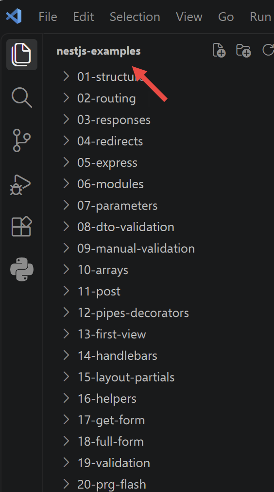
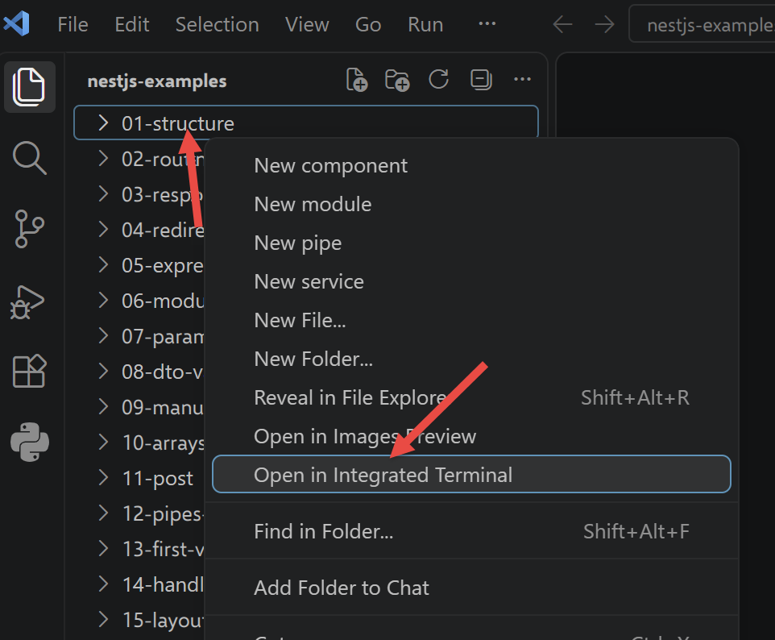

1. Introducción
El PDF del documento está |AQUÍ|.
Los códigos del documento están |AQUÍ|.
Este documento es producto de la IA Claude de Anthropic. Su propósito es adaptar el documento *Introducción a ASP.NET MVC mediante ejemplos* (2013) al framework web [NestJS]:
- el framework [ASP.NET MVC] y el lenguaje [C#] se reemplazan por el framework [NestJS] y el lenguaje [TypeScript];
- las vistas [Razor] se reemplazan por vistas [Handlebars];
- el acceso a datos con [Entity Framework] se reemplaza por el ORM [TypeORM], y una base de datos [MySQL].
El documento sigue la estructura del curso original: primero, numerosos proyectos pequeños, cada uno centrado en un único concepto, seguidos de un caso de estudio completo (una aplicación web para agendar citas en un consultorio médico) con todos los archivos comentados en detalle. El capítulo del curso original dedicado a los fundamentos de la programación web (el protocolo HTTP, el lenguaje HTML) no se ha incluido: se supone que estos fundamentos ya se conocen.
1.1. El papel de NestJS en una aplicación web
Una aplicación web suele construirse en capas, y cada capa se comunica únicamente con las capas contiguas:

- la capa web recibe las solicitudes HTTP del navegador y le devuelve páginas HTML. [NestJS] nos ayuda a escribir esta capa;
- la capa de negocio contiene las reglas de negocio de la aplicación (por ejemplo, “un paciente solo puede tener una cita próxima”). No sabe nada de la web: podría servir igualmente a una aplicación de línea de comandos;
- la capa de acceso a datos (capa [DAO], de [Data Access Object]) lee y escribe en la base de datos. Usaremos el ORM [TypeORM] ([Object Relational Mapper]), que asocia las filas de las tablas con objetos [TypeScript].
La propia capa web sigue el modelo [MVC] ([Model – View – Controller]):
- el controlador (C) es una clase cuyos métodos, llamados acciones, manejan cada uno un tipo específico de solicitud (por ejemplo, [GET /schedule]). Una acción lee los parámetros de la solicitud, invoca la capa de negocio y luego elige la vista que se mostrará;
- el modelo (M) es el conjunto de datos que la acción pasa a la vista: un simple objeto [JavaScript];
- la vista (V) es un archivo [Handlebars] (extensión [.hbs]): un archivo HTML en el que las etiquetas [{{...}}] se reemplazan por datos del modelo.
El procesamiento de una solicitud sigue los pasos numerados del diagrama:
- 1: El navegador envía una solicitud HTTP, por ejemplo, [GET /schedule?doctorId=1&day=2026-09-24];
- 2: [NestJS], que se apoya en el servidor web [Express], elige la acción encargada de manejar esta solicitud: es el enrutamiento. Antes de llegar allí, la solicitud puede pasar por middleware, guardias, interceptores y pipes, que exploraremos en los capítulos siguientes;
- 3: La acción solicita a la capa de negocio los datos que necesita;
- 4: Construye el modelo de la vista e indica la vista que debe mostrarlo;
- 5: El motor de vistas [Handlebars] genera la página HTML, que [NestJS] devuelve al navegador.
[NestJS] es un framework de [Node.js] escrito en [TypeScript]. Se basa en los conceptos de los frameworks [Spring] ([Java]) y [Angular] : los decoradores ([@Controller], [@Get], [@Injectable]...) describen el papel de cada clase, y la inyección de dependencias proporciona a cada objeto las dependencias que necesita. A menudo se usa para escribir servidores que devuelven JSON a un cliente [JavaScript] ([Angular], [React], [Flutter]...). Este documento lo usa para escribir una aplicación web clásica: el servidor genera las páginas HTML y el navegador se limita a mostrarlas.
1.2. Herramientas utilizadas
Los ejemplos se escribieron y probaron con las siguientes herramientas (su instalación se describe en el apéndice):
- [Node.js] 20 y su administrador de paquetes [npm];
- el editor [Visual Studio Code];
- un navegador reciente ([Chrome], [Firefox], [Edge]);
- la herramienta de línea de comandos [curl], que muestra las respuestas HTTP sin procesar (viene incluida con [Windows] 10 y 11);
- el SGBD [MySQL] (o [MariaDB]), por ejemplo, el de [Laragon] en [Windows], a partir del capítulo sobre acceso a datos.
Las versiones de las bibliotecas son las del archivo [package.json] de la carpeta de ejemplos: [NestJS] 10, [TypeScript] 5, [hbs] 4 ([Handlebars]), [class-validator] 0.14, [TypeORM] 0.3, [Bootstrap] 5.
1.3. Ejemplos
Los ejemplos se almacenan en una carpeta llamada [examples], con una subcarpeta por ejemplo:
Todos los ejemplos comparten las mismas bibliotecas, que se declaran en [examples/package.json]. Se instalan una sola vez, en una consola abierta en la carpeta [examples]. En VSCode, abra la carpeta examples:

luego, en un terminal integrado en VSCode, escriba el comando
Cada ejemplo tiene entonces la estructura mínima de un proyecto [NestJS]:
- [src]: el código [TypeScript];
- [views]: las vistas de [Handlebars] (a partir del capítulo 4);
- [nest-cli.json]: la configuración de la herramienta de línea de comandos de [NestJS];
- [tsconfig.json]: la configuración del compilador de [TypeScript].
Para ejecutar un ejemplo, abra una consola en la

y escriba:
[npx] localiza la herramienta [nest] en la carpeta [node_modules] de la carpeta padre. [nest start] compila el código [TypeScript] en la carpeta [dist] y luego ejecuta [dist/main.js]. Con la opción [--watch], el código se recompila y el servidor se reinicia cada vez que se modifica un archivo [.ts]:
Todos los ejemplos escuchan en el puerto 3000: solo se puede ejecutar uno a la vez. Detenga el servidor con [Ctrl-C] en la consola.
El archivo [tsconfig.json] es el mismo para todos los ejemplos:
Comentemos este archivo:
- línea 3: el código compilado usa los módulos [CommonJS] de [Node.js] ([require]);
- línea 4: el código generado corresponde a la versión reciente de [JavaScript] (ES2022), que incluye [Node.js] 20;
- líneas 6–7: el código fuente está en [src] y el código compilado está en [dist];
- líneas 9–10: obligatorias para [NestJS]. Los decoradores ([@Controller]...) son una característica de [TypeScript] que debe habilitarse, y [emitDecoratorMetadata] conserva los tipos de los parámetros de constructores y métodos en el código compilado: gracias a ello [NestJS] sabe qué objeto inyectar en un constructor;
- línea 12: el compilador señala el uso de un valor que puede ser [null] o [undefined];
- línea 13: los archivos de declaración de las bibliotecas no se verifican (compilación más rápida).
El archivo [nest-cli.json] también es común a todos los ejemplos:
- línea 4: el código fuente está en [src];
- línea 6: la carpeta [dist] se vacía antes de cada compilación (un archivo eliminado de [src] no deja una copia compilada obsoleta).
1.4. Contenido del documento
El documento avanza de la siguiente manera:
Capítulo | Contenido | Ejemplos |
Controladores, acciones, | Del navegador a la acción: rutas, respuestas, redirecciones, módulos | 01 a 06 |
El modelo de la acción | Parámetros de la solicitud: conversión, validación, formularios POST | 07 a 12 |
La vista y su modelo | Handlebars, plantillas, vistas parciales, helpers, formularios, validación, PRG | 13 a 21 |
Internacionalización | Una aplicación en francés e inglés | 22 |
Ámbitos de datos | aplicación, solicitud, cliente | 23 |
El ciclo de vida de una solicitud | middleware, guardia, interceptor, pipe, filtro de excepciones | 24 |
Autenticación y autorización | JWT en una cookie, roles, CAPTCHA, límite de intentos | 25–27 |
Arquitectura en capas | Web / Negocio / DAO con TypeORM y MySQL | 28 |
Caso de estudio | La aplicación RdvMedecins, explicada archivo por archivo | - |
Cada ejemplo introduce solo unos pocos conceptos nuevos y los capítulos se apoyan unos en otros: es mejor leerlos en orden. El caso de estudio, por su parte, recurre a todos los conceptos de los capítulos anteriores: siempre que corresponde, su comentario remite al ejemplo donde se introdujo el concepto.